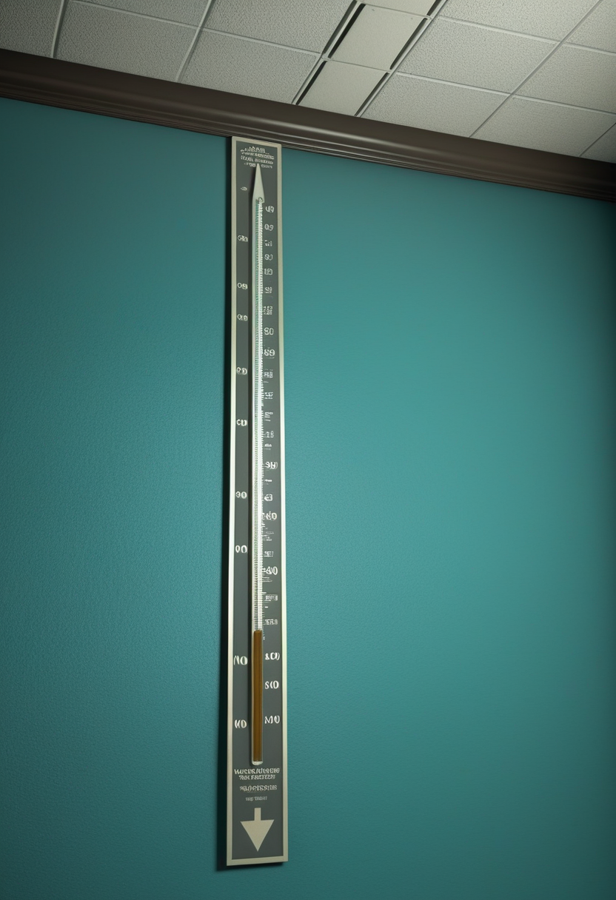
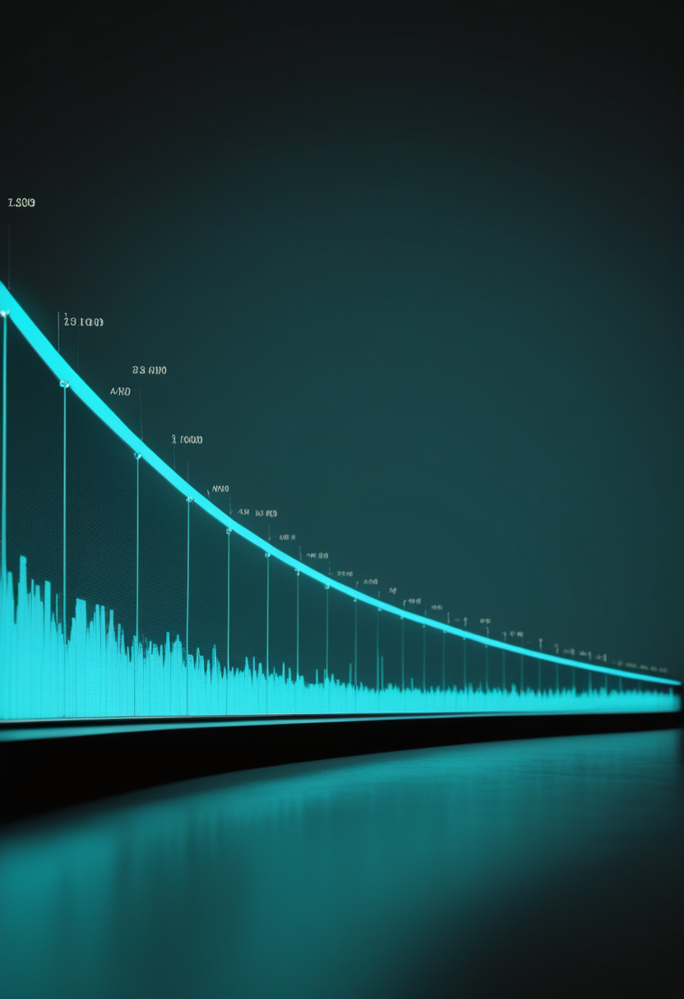
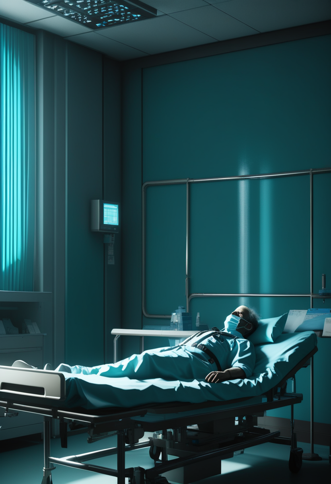

日曜日の便り。米国では2026年の麻疹確定例が約2,300例に達し、過去35年で最多を記録した。集団免疫に必要な95%を下回るMMR接種率が背景にあるとされる。DRCのエボラは死者数の高止まりが続く中、対応の最前線に立つ医療従事者自身が給与未払いという苦境に直面していることも明らかになった。それでも命の現場では、英国が新生児スクリーニングの全国展開に向けて動き続けている。自由の分野では、全盲患者の視覚機能を改善するインプラント「Orion」の長期データが示され、非侵襲型BCIの中国BrainCoは世界的な規模の資金調達を果たした。畏敬の宇宙では、JAXAが小惑星の起源に迫る発見を報告し、Quantinuumは量子ビットの編み込みによる新方式の量子計算を世界で初めて実証した。美の章では、認知や神経の「デジタルツイン」を巡る統治や倫理の議論が、査読前論文の形でさらに深まりつつある。

米CDCによると、2026年の麻疹確定例は7月23日時点で約2,300例(45管轄区)に達し、過去35年で最多を記録した。前年通年の2,289例を、わずか7カ月で上回るペースとなる。年間35件のアウトブレイクが報告され、確定例の93%がアウトブレイク関連。背景には、集団免疫に必要な95%の閾値を下回るMMR接種率(92.5%、2024-25年度)がある。ワクチンで防げるはずの感染症が、先進国である米国で過去最悪ペースで再燃している。
英国の新生児スクリーニングについて、pharmaphorumは2026年10月からイングランドで全国展開が始まり、1年以内に全ての新生児が検査を受けられる体制になると報じた。英国では既にSpinraza・Evrysdi・Zolgensmaの3種の疾患修飾薬が承認されており、早期発見と早期治療を組み合わせる体制整備が進む。
新生児スクリーニングの開始時期は報道によって差異があるが、英国が早期診断網の全国展開へ向けて動いていること自体は一貫している。
Vivani Medical傘下のCortigent社は、視覚野に60電極アレイを埋め込む「Orion視覚皮質プロテーゼ」の早期実現可能性試験について、最長6年に及ぶ追跡データを北米神経調節学会(NANS)年次総会で発表した。全盲の被験者6名全員で、デバイス作動時に視覚機能課題の成績が改善し、電極の機能喪失率は4%未満にとどまった。深刻な有害事象は試験初期のてんかん発作1件のみで、以降は刺激パラメータの調整で管理されている。
非侵襲型BCIを手がける中国BrainCo社は、香港IDG CapitalとWalden International(インテルCEOのリップブー・タン氏設立)が共同主導する20億元(約286億円)の資金調達を完了したと発表した。Neuralinkを除けば世界最大級のBCI資金調達規模とされ、調達資金は義手など身体障害者向け製品の研究開発・量産体制拡充に充てられる。同社は今後5〜10年で100万人の身体障害者、1,000万人の自閉症・ADHD・認知症等の患者の生活改善を目指すとしている。
米国発の埋込み型BCIが臨床試験で存在感を示す一方、非侵襲型で身体障害者支援を掲げる中国BrainCoが資金調達で世界的な規模に達するなど、BCIの実装経路は一つに集約されていない。
米CDCによると、2026年の麻疹確定例は7月23日時点で約2,300例(45管轄区)に達し、過去35年で最多を記録した。前年通年(2,289例)をわずか7カ月で上回るペースで、年間35件のアウトブレイクが報告され確定例の93%がアウトブレイク関連。集団免疫に必要な95%を下回るMMR接種率(92.5%、2024-25年度)が背景にあるとみられる。

Al Jazeeraが7/24付で報じたところによると、DRCの医療従事者は給与未払いのまま流行対応の最前線に立たされ続けており、隔離病床の運営など対応能力の維持そのものが危ぶまれている。イトゥリ州などでは医療従事者のストライキも既に発生している。
本来は制圧可能なはずの麻疹が米国で過去最悪ペースの再燃を見せる一方、DRCではエボラ対応にあたる医療従事者自身が給与未払いという別の危機に直面しており、南北両方で公衆衛生システムの脆さが同時に露呈している。
JAXA宇宙科学研究所(ISAS)は7月21日、小惑星1093 Fredaと1390 Abastumaniが、リュウグウのようなC型小惑星と、彗星に近いとされる暗いX型小惑星の中間的な分光特性を示すことを発見したと発表した。可視〜近赤外域で正の傾きを持つスペクトルと浅い吸収帯を併せ持ち、鉄に富む層状ケイ酸塩鉱物クロンステダイトの存在で説明できる可能性があるという。C型とX型が連続的なスペクトルの帯をなす証拠は、両者が共通の起源を持つ可能性を示唆している。
Quantinuumはシカゴ大学プリツカー分子工学スクール・ハーバード大学・ストーニーブルック大学との共同研究で、トラップイオン型量子プロセッサ「H2」上の54個の物理量子ビットを用い、非可換エニオン(準粒子)のブレイディング(編み込み)と融合を組み合わせた、フォールトトレラントな普遍的トポロジカル量子ゲートセットを世界で初めて実証したとNature誌に発表した(7月17日前後)。従来必要とされてきた資源集約的な「マジック状態蒸留」に頼らずに普遍計算を実現できる可能性を示すもので、S3対称性という最小の非可換群を利用したスケーラブルな誤り耐性量子計算への新たな道筋として注目されている。
JAXAは小惑星の分光的な連続性から太陽系小天体の起源に迫り、Quantinuumは量子ビットの編み込みという全く異なる「連続的な変形」から誤り耐性計算への道を切り開いた――スケールは違えど、両者は「つながり」の中に新しい構造を見出した一週間だった。
個人の認知・行動をモデル化する「認知デジタルツイン(Cognitive Digital Twins)」について、権限(Authority)・自律性(Autonomy)・アクセスと管理(Access and Control)・説明責任(Accountability)・可用性(Availability)の5軸からなる統治枠組みを提案する論文が査読前公開された。技術の実用化に先んじて制度設計の議論が進んでいる。
Journal of Law, Medicine & Ethics(Cambridge Core)に掲載された医療デジタルツインの倫理を扱う論考では、心のレベルのデジタルツインが実現した場合、身体の死後もその人の意識の一部が何らかの形で残り得るのかという、プライバシーや同意を超えた新たな倫理的問いが提起されている。
個々の脳活動パターンを模した「ニューラル・デジタルツイン」を次世代BCIの基盤として位置づける査読前論文が公開され、BCI領域と人間のデジタル化領域を橋渡しする研究の方向性が示された。
意識アップロードそのものは依然「30〜40年先」が科学的コンセンサスだが、個人の思考・行動を部分的に模す「認知/神経デジタルツイン」という中間的技術は、統治枠組みの提案や死後の意識の扱いという倫理的な問いを伴いながら、査読前論文レベルで着実に議論が具体化しつつある。
2026年7月26日、米国の麻疹は過去35年で最多という記録を更新し、ワクチンで防げるはずの病がなお前線を後退させ得ることを静かに示した。DRCのエボラでは、対応にあたる医療従事者自身が給与未払いという苦境に直面しており、数字の裏側にある人の営みにも光が当たった一週間だった。それでも英国は新生児スクリーニングの網を全国に広げようとしており、視覚を失った人々に「見る」手段を返すインプラントは6年分の安全性データを積み重ねている。宇宙では、JAXAが小惑星の起源をたどる手がかりを見つけ、量子の世界ではエニオンという奇妙な準粒子の編み込みが新しい計算の形を切り開いた。認知や神経を写し取る「デジタルツイン」を巡る問いは、技術的な挑戦から、死後にも何かが残るのかという哲学的な問いへと、静かに広がり続けている。
では、また明日の朝に。 — JaH